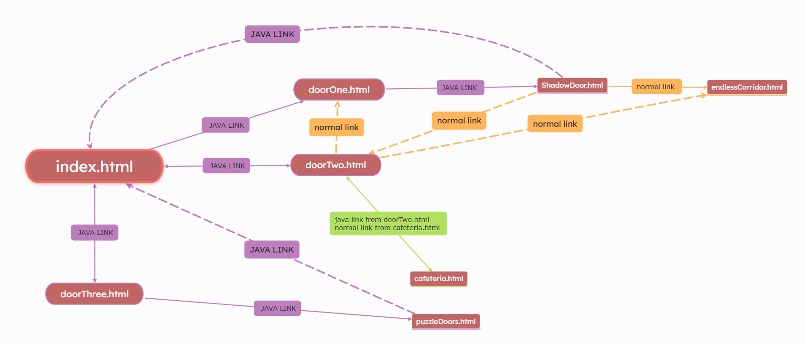

STATEMENT
PRISON BREAK
Colomns A
A game that defies common stereotypical game mechanics by
making the players reach a solution through wrong moves. This game distorts,
confuses and lies to the player to ‘play’ with them.
Colomns B
- 1a, “to engage in sport or
recreation and especially in activity for amusement”.
- 1 a (4) merriam-webster: exploit, manipulate.
- 2 d: to gamble. The game has some ambiguity in it and may involve risks.
Colomns C
This project is inspired by Miguel Sicart’s idea from the text “Play
Matters” that rules are props and that the process of play can transform our
understanding of objectives. Instead of viewing the seemingly wrong moves as
failures, the players are pushed to redefine success by experimenting with
unconventional approaches.
Colomns D
The project uses the JavaScript-oriented option and JavaScript
functions to track moves, provide feedback/ score, and also create a randomized
start state for each playthrough.
Artist's statement
The atmosphere of the game is dark gloomy and is an andeventure type of game where user is encouraged to
explore the prison. Mystery is engraved throughout the games on walls, through NPCs, doors, objects, and cells. There is a psychological aspect of the game too.
There is deception and actual evidence, the player has to trust the right people to win.
This project defies logical solutions, inviting players to
play without a strict objective and to find satisfaction in making unexpected
choices. The Player in the game does not know what move to make next as in the case of the
3 door problem, or the shadow door, where there are 7 doors and the player does not know which
one leads to victory for example.
The project involved uses puzzles and riddles, and often the
player will have to gamble or take risks to be successful, as the games may
involve chances, distortions and ambiguity. This is seen in the minesweeper game when
player is forced to play the game with unonventional rules of the typical minesweeper game in
order to progress in the game. The game confuses the player by making them think there are 3-(the atual number of bombs in the area).
the shadow door uses cryptic riddles in order to progess in the game, throughout the shadowdoor.html page the
player has to decode texts on the wall written in reverse text and then solve the riddle in order to gain keys and clues
to win the game or lose if it was trick.
The NPCs were used throughout the game to trick and/or help the player escape by providing him clues. NPCs also challenge the player by
telling them play with them as seen in the john the prisoner in the cafeteria.html page, he tricks the player in his game
by subtracting 100 from the actual number of points the player gets from drawing 10 cards from a deck of cards. The player has chance to
realize this and object to the prisoner in which case he wins. Or the player may just get lucky and win despite the cheating.
doorTwo.html also uses deciet and hints throughtout the page, the user is forced to look for the key if he wants to get into the cafeteria
and if he clicks the security gaurd on the right's head he gets the key although the other security gaurds will lead to failture. The key
can also be seen when zoomed in the wall.
The game also has a theme of trust. The player may take risks to trust certain people throughout his/her journey.
The finale of the game where player is forced to pick one of 3 doors which would lead him to freedom or loss, the player
has the option to phone call one of the NPCs that shared their contact information, they are to write their information from
memory and then proceed with the call they may lie or tell the truth, the player then takes their desion with what door to pick.
Ufcourse the player may try mutliple times in order to see all possiblilites but that only means they have to play the minesweeper game
that many times.
in conclusion, instead of viewing the seemingly wrong moves as a failure, the
players are pushed to redefine success by experimenting with unconventional
approaches. Success in the game has no garentee, as it relies alot on chance.
But skill/ problem solving is a neccessary asset. There is also a psychological aspect of the game
where the user may or may not trust certain characters.
File names
-
- index.html
,
- doorOne.html
, - doorTwo.html
, - doorThree.html
, - ShadowDoor.html
, - cafeteria.html
, - endlessCorridor.html
, - puzzleDoors.html
,.
Total number of pages that use javascript in some way: 8 pages.
-
endlessCorridor.html and doorTwo.html use the keypresses to zoom in. doorOne.html and doorThree.html uses randmoness to generate a random grid
for playing minesweeper. While-loops were used in cafeteria.html to get the players name when speaking to the NPC. Recursion was used in doorThree.html
to make the timer and make the add timer option you get when you write the correct key at the beginning.
links

credits for javascript
-
https://www.geeksforgeeks.org/
-
https://www.w3schools.com/
creative commons: